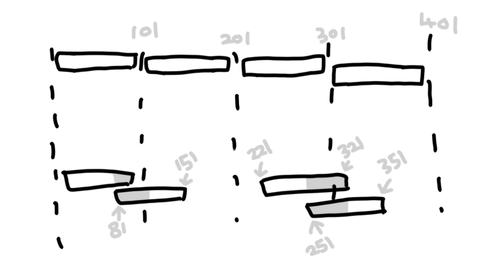

1. RIP, OSPF, 베스천호스트, 방화벽, 허니팟
RIP(Routing Information ptotocol): 목적지까지 최단거리 경로 설정(홉카운트적은거리)
30초 마다 모든 라우팅 정보 전달 + 최대 전달 홉수 15개
OSPF(Open Short Path First): 코스트 값 계산해서 최적의 경로 설정
정기적 업데이트X(네트워크 변경사항 있으면 라우팅정보 업데이트)
베스천호스트: 접근을 허용, 차단하는 방화벽의 기능을 함(ex:망루)
하지만 방화벽과 다른 개념이고 하나 이상 가능.
베스천호스트 중 한 곳에 방화벽 설치 될 수 있음.
방화벽: 불안정한 외부 네트워크와
내부 네트워크 사이를 지나는 패킷을 차단&보내기 기능(ex: 성문)
들어오는 거 나가는 거 다 통제
허니팟: 해커를 유인하기 위한 가짜 네트워크 함정
예시: 곰이 꿀단지(가짜네트워크) 발견한 거 먹느라 정보 빼앗기는 줄 모름
(특정목적: 정보수집 경각심 연구를 위한)
2. 스캔공격 스푸핑 방화벽
스캔공격(정보수집)(Scan Attack)
scan공격
시스템의 취약점을 찾기 위해 포트나 서비스를 탐색하는 공격.
예시: (정보수집의 스캔 어떤포트 열려있는지
어떤 서비스 가능한지 21 ftp 23 텔넷 25 메일 80 웹서비스)
스푸핑(속이다)의 3가지 기법 쓰기
IP스푸핑, DNS스푸핑, ARP스푸핑(맥주소)
ARP스푸핑 막을 방법
맥주소 아이피주소 고정 시키기
그 명령 ARP -s (IP주소) (MAC주소)
IP 스푸핑 문제점: 트러스트 관계를 악용.
특정 아이피로 들어오면 인증과정 없이 로그인 됨.
IP스푸핑 막는 방법
트러스트 관계 사용하지 않기: (모든 접근 시 인증 요구).
SSO (Single Sine-On) 사용:
입구에서 한 번의 인증으로 여러 시스템에 접근 가능하게 설정.
Single단일로 Sine사인하면 On쓸 수 있다.
(트러스트와 SSO차이(이해용):
트러스트 관계는 시스템 간의 신뢰를 기반으로 인증을 생략하는 방식.
SSO는 사용자가 한 번 로그인하면 여러 서비스에 접근할 수 있도록 하는 방식.)
방화벽 개념
방화벽: 안전한 내부 시스템과 불안전한 외부 시스템 사이에서 트래픽을 필터링.
예시: 안전한 내부시스템 불안전한 외부시스템 사이에서
외부에서 나쁜 걸 들어오는 걸 막고
안에서 중요한 걸 나가는 걸 막음
방화벽 방식 두 개
패킷 필터링: 특정 패킷을 차단하거나 허용.
프록시 방식: 프록시 서버를 통해 트래픽을 제어.
3. 스니핑과 프로미스 큐어스 모드 설명
스니핑: 도청처럼 모든 정보를 빼감 (ex: tcp dump)
= 막는 것도 탐지도 어려움 프로미스 큐어스 모드에서 작동
스위치 방식: 정보를 모르니까 플러딩으로 모든 포트 정보 다 보냄.
러닝 과정 거치고 포워딩 필터링 하는 과정 거쳤다고.
프로미스큐어스 모드: 네트워크 카드가 모든 트래픽을 수신하도록 설정.
설명: 플러딩의 반대로 자신의 주소값 무시하고 모든 패킷 받는 상태.
플러딩: 모든 포트에서 모든 패킷, 정보 다 보내버림
그래서 스위치가 스니핑 막는 도구 되어버림.
스니핑 방지법: 스위치 Jamming(Macof 마코프)공격:
스위치를 공격해 더미 허브처럼 동작하게 만듦.
설명: 플러딩 공격으로 스위치의 메모리를 오버플로우 시켜서
네트워크 성능 저하 시키기.
4. DOS (Denial of Service) 서비스 거부 공격
DDOS (Distributed Denial of Service)
DDOS(디도스): 여러 대의 컴퓨터를 이용해 공격.
예시: 좀비피쉬처럼 분산됨
개념과 공격종류: 신플러딩, 본크, 보인크, 테어드랍, 랜드
신 플러딩: 다수의 가짜 SYN 패킷을 보내 연결 자원을 고갈시킴.
예시: (신 = 신크루나이즈(가짜이용자) / 플러딩 = 연결설정)
가짜가 많아져서 수도꼭지 자리 차지
본크: 순서번호를 모두 1번으로 설정하여 패킷을 혼동시킴.
예시: (순서번호 다 1번)
보인크: 특정 번호로 반복 패킷을 보내 순서 체계를 망침.
예시: 1번 2번 3번 4번 5,5,5,5,5번
테어드랍: 시퀀스넘버 일부 겹치거나 생략된 패킷을 보내 시스템을 혼란스럽게 만듦.

랜드: 출발지와 목적지 IP주소를 동일하게 설정하여 네트워크 자원을 고갈시킴.
예시: 동시 사용자 수 점유 CPU고갈, 강아지 꼬리 보고 빙글빙글
스머프 핑오브데스 안냄
5. IDS (Intrusion Detection System) 침입 탐지 기법
오용 탐지 (Misuse Detection):
시그니처 기반, 지식 기반: 이미 알려진 공격 패턴을 탐지.
장점: 오탐지율이 낮음.
단점: 새로운 공격 탐지가 어려움.
이상 탐지 (Anomaly Detection):
행동 기반: 정상적인 패턴에서 벗어나는 행위를 탐지.
장점: 새로운 공격을 탐지 가능.
단점: 오탐지율이 높음.
특징: IDS인공지능(스스로판단),
면역시스템(감지한 거 스스로 학습해서 대응하지만 재설치하면 사라짐)